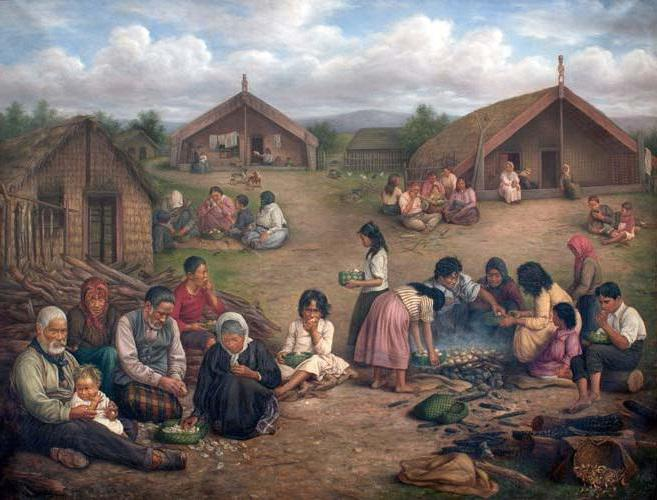
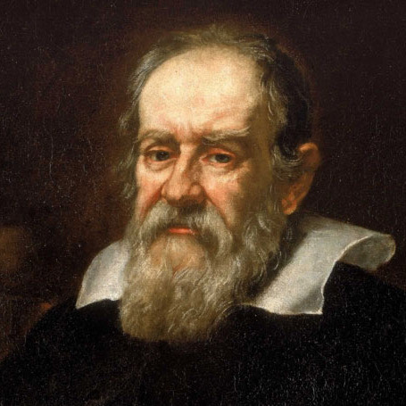
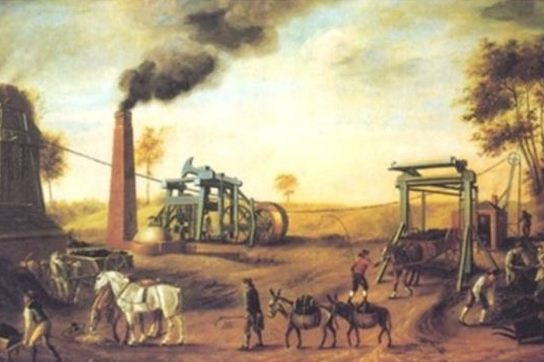
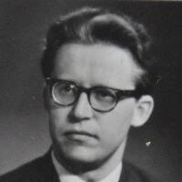
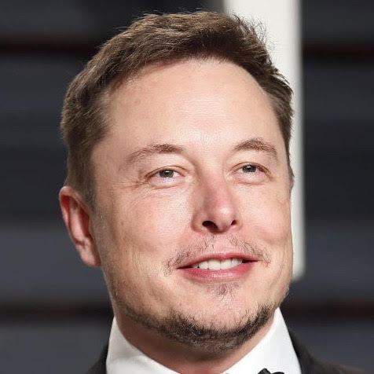

Етика відносин "людина-природа" в традиційному суспільстві

Традиційне суспільство намагається перешкодити знищенню природи і робить для цього усе що може. Здається що через це має рівень екології піднятись, але все не так. Через мізерний процент людей в суспільстві, які щось роблять для екології. Так стається через неможливість людей працювати над екологією через нестачу коштів.

Галілео Галілей
Iталійський мислитель епохи Відродження, засновник класичної механіки, фізик, астроном, математик, поет і літературний критик, один із засновників сучасного експериментально-теоретичного природознавства. Вніс значні вдосконалення в конструкцію телескопа, а також за допомогою телескопічних спостережень довів правильність геліоцентричної теорії будови сонячної системи. Син музиканта Вінченцо Галілея.
Етика відносин "людина-природа" в індустральному суспільстві

Індустріалізація приводить до посиленого зростання міст, зміцнюється національна ліберально-демократична держава, розвивається промисловість, освіта, сфера обслуговування. Зявляються нові спеціалізовані суспільні статуси (робітник, інженер, залізничник та ін.)

Сікора Богдан
Сікора Богдан Степанович – викладач математики, кандидат фізико-математичних наук, доцент.Закінчив Верхньолипецьку СШ , з відзнакою фізико-математичний факультет Львівського педінституту, аспірантуру на його кафедрі вищої математики. Захистив кандидатську дисертацію, доцен.Працював викладачем, старшим викладачем, доцентом кафедри математики Станіславського (Івано-Франківського педінституту імені Василя Стефаника) педінституту.
Етика відносин "людина-природа" в інформаційному суспільстві

В останні десятиліття XX ст. людство вступило у стадію так званого інформаційного суспільства. Масова інформатизація - процес закономірний і незворотній. Інформаційні процеси все більше і глибше впливають на всі сторони суспільного життя й саму людину.
